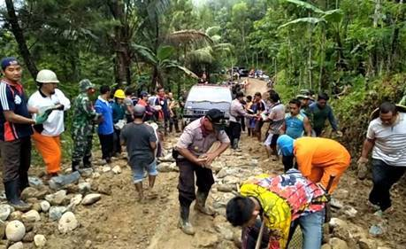
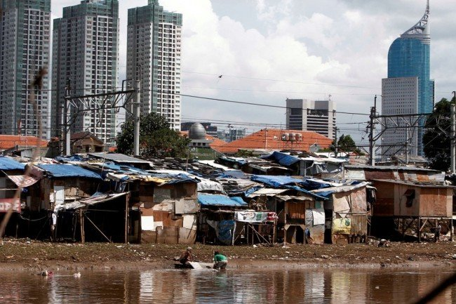
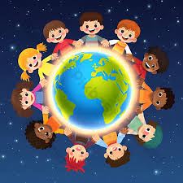

Bab 6: Interaksi, Komunikasi, Sosialisasi, Institusi Sosial, dan Dinamika Sosial
A. Pengantar Konseptual: Manusia sebagai Makhluk Sosial
Sejak awal keberadaannya, manusia tidak pernah hidup dalam kesendirian. Setiap individu dilahirkan, tumbuh, dan belajar dalam ruang sosial—dikelilingi oleh orang lain yang turut membentuk cara berpikir, berperilaku, dan merasa. Dalam pandangan sosiologi klasik, manusia disebut sebagai homo socius—makhluk yang hanya dapat mewujudkan dirinya sepenuhnya melalui kehidupan bersama orang lain.

Letakkan file gambar dengan nama "gambar1.jpg" di folder "s1-bab-6"
1. Hakikat Manusia sebagai Makhluk Sosial
Kebutuhan untuk berinteraksi bukan sekadar dorongan biologis, melainkan kebutuhan eksistensial. Seorang anak belajar bahasa dari keluarganya, nilai dari lingkungannya, dan identitas dari kelompok sosial tempat ia tumbuh. Dari sinilah muncul kesadaran bahwa diri seseorang adalah hasil dari cermin sosial—kita mengenal siapa diri kita karena melihat pantulan diri dalam reaksi orang lain. Di titik ini, manusia tidak sekadar berada di dunia, tetapi bersama di dunia. Keterhubungan ini menegaskan bahwa setiap tindakan, sekecil apa pun, berdampak pada sistem sosial yang lebih luas.
2. Komunikasi sebagai Jembatan Sosial
Interaksi tidak mungkin terjadi tanpa komunikasi. Melalui bahasa, simbol, dan ekspresi, manusia membangun jembatan pengertian. Komunikasi bukan hanya soal menyampaikan pesan, tetapi juga proses memahami dan dimengerti. Dalam masyarakat modern, bentuk komunikasi terus berevolusi: dari tatap muka, tulisan, hingga ruang digital yang melampaui batas geografis. Namun, semakin canggih media komunikasi, semakin besar pula tantangan memahami makna sebenarnya. Kesalahpahaman, informasi palsu, dan bias budaya dapat mengaburkan pesan yang disampaikan. Maka, kemampuan berpikir kritis dan empati menjadi kunci agar komunikasi tidak kehilangan maknanya.
3. Keterhubungan antara Individu, Kelompok, dan Masyarakat
Struktur sosial terbentuk dari interaksi berulang antara individu dan kelompok. Individu memengaruhi masyarakat melalui gagasan dan tindakan; masyarakat membentuk individu melalui norma dan nilai. Hubungan ini bersifat timbal balik dan dinamis. Dalam masyarakat majemuk seperti Indonesia, keberagaman suku, agama, bahasa, dan budaya bukan sumber perpecahan, melainkan peluang untuk memperkaya perspektif kemanusiaan. Keberagaman memberi ruang bagi manusia untuk belajar saling memahami dan menghargai perbedaan.
4. Manusia dan Lingkungan Sosial-Alamiah
Kehidupan sosial manusia tidak bisa dipisahkan dari lingkungan alam. Ketergantungan pada alam—air, udara, tanah, dan makhluk hidup lain—membentuk kesadaran ekologis dalam sistem sosial. Dalam konteks ini, interaksi sosial tidak hanya antar-manusia, tetapi juga antara manusia dan lingkungan hidup. Menjaga keseimbangan alam berarti menjaga keberlangsungan masyarakat itu sendiri.
5. Nilai Universal dalam Kehidupan Sosial
Tiga nilai utama menopang kehidupan sosial: empati, gotong royong, dan toleransi.
- Empati menumbuhkan kemampuan memahami perasaan orang lain.
- Gotong royong mencerminkan semangat kolaborasi khas budaya Indonesia yang menyeimbangkan kepentingan pribadi dan kolektif.
- Toleransi menjaga ruang damai di tengah perbedaan, memastikan keberagaman tidak berubah menjadi konflik.
Nilai-nilai inilah yang menjadikan kehidupan sosial manusia bukan sekadar alat bertahan hidup, tetapi wadah untuk menumbuhkan makna hidup.
Refleksi A: Dari Individu Menuju Kesadaran Sosial
Manusia sebagai makhluk sosial tidak hanya berarti "butuh orang lain," tetapi juga "bertanggung jawab atas orang lain." Setiap tindakan pribadi memiliki dimensi sosial. Menyadari hal ini berarti memikul tanggung jawab moral untuk menjaga harmoni sosial dan ekologis.
Di sinilah lahir kesadaran kewargaan—kesadaran bahwa identitas diri terikat dengan tanggung jawab terhadap komunitas dan planet tempat kita hidup bersama.
B. Proses Interaksi dan Komunikasi Sosial
Tidak ada masyarakat tanpa interaksi. Tidak ada interaksi tanpa komunikasi. Dua hal ini adalah urat nadi kehidupan sosial. Melalui interaksi, manusia menguji, menegosiasikan, dan menegakkan makna hidupnya di antara manusia lain. Sementara komunikasi menjadi jantung yang memompa makna itu agar terus mengalir di seluruh tubuh masyarakat.
1. Pengertian Interaksi Sosial
Interaksi sosial adalah hubungan timbal balik antara individu, kelompok, atau antar-kelompok yang saling memengaruhi. Interaksi bukan sekadar "bertemu" secara fisik; ia mencakup pertukaran simbol, perasaan, dan makna. Misalnya, ketika dua orang saling tersenyum, ada pesan sosial yang tidak diucapkan tetapi dimengerti: pengakuan, keramahan, dan penerimaan. Interaksi sosial adalah tempat lahirnya norma, peran, dan struktur sosial. Ia mengubah sekumpulan individu menjadi "masyarakat".
2. Syarat Terjadinya Interaksi: Kontak Sosial dan Komunikasi
Interaksi terjadi jika dua syarat dasar terpenuhi:
- Kontak sosial — ada bentuk hubungan, baik langsung (tatap muka) maupun tidak langsung (melalui media).
- Komunikasi — ada penyampaian dan penerimaan pesan yang memiliki makna sosial.
Tanpa kontak, pesan tak akan sampai; tanpa komunikasi, kontak tak bermakna. Sebagai contoh, dua orang duduk bersebelahan di bus tanpa saling menyapa belum tentu berinteraksi sosial. Tapi ketika salah satunya menawarkan kursi kepada penumpang lanjut usia, itu sudah menjadi tindakan sosial yang membawa makna.

Letakkan file gambar dengan nama "gambar2.jpg" di folder "s1-bab-6"
3. Bentuk-Bentuk Interaksi Sosial
Interaksi sosial memiliki berbagai bentuk yang mencerminkan dinamika kehidupan manusia:
- Kerja sama (cooperation) – bentuk interaksi paling konstruktif, ketika individu atau kelompok bekerja bersama mencapai tujuan bersama.
- Persaingan (competition) – dorongan untuk mencapai tujuan tanpa menjatuhkan pihak lain; sering memacu inovasi.
- Konflik (conflict) – benturan kepentingan yang dapat memecah atau justru memperkuat solidaritas bila dikelola dengan bijak.
- Akomodasi (accommodation) – proses mencapai keseimbangan setelah konflik, melalui kompromi, mediasi, atau konsensus.
- Asimilasi – penyatuan dua budaya menjadi pola baru yang disepakati bersama.
Interaksi sosial ibarat tarian yang terus bergerak antara harmoni dan gesekan. Tidak ada masyarakat tanpa konflik, tetapi juga tidak ada konflik tanpa peluang untuk memperkuat pemahaman bersama.
4. Komunikasi Sosial: Bahasa, Simbol, dan Teknologi
Komunikasi sosial adalah mekanisme utama dalam pembentukan realitas sosial. Melalui bahasa dan simbol, manusia tidak hanya menyampaikan informasi tetapi juga membangun dunia makna bersama. Bahasa menjadi alat yang memungkinkan manusia mentransfer ide, nilai, dan identitas lintas generasi. Namun, di era digital, komunikasi tidak lagi terbatas pada ruang fisik. Media sosial mengubah cara manusia berinteraksi: lebih cepat, lebih luas, tetapi juga lebih rentan terhadap distorsi. Kelebihan komunikasi digital adalah jangkauannya yang global; kelemahannya adalah hilangnya kedalaman interaksi emosional. Dalam ruang digital, kata-kata bisa melesat lebih cepat daripada niat yang menyertainya. Oleh karena itu, literasi digital—kemampuan berpikir kritis dan etis dalam berkomunikasi daring—menjadi kebutuhan sosial baru yang menentukan kualitas hubungan antar-manusia di abad ke-21.
5. Dampak Perkembangan Teknologi terhadap Interaksi Sosial
Teknologi komunikasi modern tidak hanya mengubah cara manusia berhubungan, tapi juga struktur sosial itu sendiri. Ruang sosial kini meluas dari desa dan kota ke dunia maya: komunitas tidak lagi terikat tempat, tetapi kesamaan minat dan ide. Namun, ada paradoks: semakin banyak alat untuk terhubung, semakin besar risiko keterasingan. Seseorang bisa memiliki ribuan teman virtual, tetapi tetap merasa kesepian secara sosial. Fenomena ini menunjukkan bahwa kuantitas hubungan tidak menjamin kualitas makna sosial di dalamnya. Interaksi sosial sejati tetap membutuhkan unsur kehadiran, empati, dan keterlibatan emosional yang tidak bisa sepenuhnya digantikan oleh teknologi.
Refleksi B: Menjaga Kualitas Hubungan di Dunia yang Terhubung
Interaksi sosial modern menuntut manusia untuk tidak sekadar "terhubung", tetapi juga "bermakna dalam keterhubungan". Kecanggihan komunikasi seharusnya memperluas rasa kemanusiaan, bukan menipiskannya. Membangun hubungan sosial yang sehat berarti menyeimbangkan antara kecepatan informasi dan kedalaman empati. Dalam konteks masyarakat Indonesia, semangat tepo seliro, musyawarah, dan gotong royong adalah bentuk komunikasi sosial khas yang perlu dipertahankan di tengah globalisasi digital. Nilai-nilai lokal ini menjaga manusia agar tidak kehilangan akarnya ketika dunia berubah terlalu cepat.
C. Sosialisasi dan Pembentukan Identitas Diri
Manusia tidak lahir dengan identitas sosial yang siap pakai. Ia hanya membawa potensi: kemampuan berpikir, merasa, dan beradaptasi. Identitas—siapa kita, dari mana kita, dan apa yang kita yakini—dibentuk perlahan melalui proses panjang bernama sosialisasi. Melalui sosialisasi, manusia belajar menjadi anggota masyarakat, menyerap nilai, dan memahami peran yang harus dijalankan. Dengan kata lain, sosialisasi adalah jalan yang menghubungkan individu dengan kebudayaan kolektifnya.
1. Pengertian dan Makna Sosialisasi
Sosialisasi adalah proses pembelajaran sepanjang hayat, di mana individu memperoleh pengetahuan, sikap, nilai, dan keterampilan yang diperlukan agar dapat berpartisipasi efektif dalam masyarakat. Sosialisasi bukan sekadar adaptasi sosial—ia adalah proses pembentukan kesadaran diri. Lewat interaksi dengan orang lain, manusia belajar melihat dirinya sebagaimana orang lain melihatnya. Inilah yang disebut sosiolog Charles Horton Cooley sebagai "looking-glass self"—diri sebagai cermin sosial. Dalam cermin itu, identitas seseorang tidak pernah statis; ia terus direvisi, ditafsir ulang, dan diperkuat melalui pengalaman sosial baru.
2. Agen-Agen Sosialisasi
Setiap individu mengalami sosialisasi melalui berbagai agen atau lembaga sosial yang berperan berbeda dalam membentuk identitas:
- Keluarga: agen pertama dan utama. Di sinilah nilai dasar, bahasa, dan pola perilaku pertama kali diperkenalkan.
- Sekolah: memperluas dunia sosial anak; memperkenalkan disiplin, tanggung jawab, dan kerja sama.
- Teman sebaya: membantu individu belajar menegosiasikan peran sosial secara setara, membentuk rasa kebersamaan dan solidaritas.
- Media massa dan media digital: membentuk pandangan global, gaya hidup, dan aspirasi baru, namun juga membawa tantangan berupa distorsi nilai dan pencampuran identitas budaya.
- Masyarakat luas: menjadi ruang praktik nilai-nilai sosial yang telah dipelajari sebelumnya.
Proses ini bersifat spiral, bukan linear. Manusia bisa kembali belajar dan menyesuaikan diri setiap kali berhadapan dengan konteks sosial yang baru.
3. Nilai, Norma, dan Peran Sosial
Dalam proses sosialisasi, individu tidak hanya meniru perilaku sosial, tetapi juga menyerap nilai (apa yang dianggap penting), norma (aturan perilaku yang diharapkan), dan peran sosial (fungsi yang dijalankan dalam kelompok). Nilai menjadi kompas moral, norma menjadi pagar sosial, dan peran sosial menjadi jalan tempat individu mengekspresikan identitasnya. Keseimbangan ketiganya membentuk keteraturan sosial—tanpa nilai, masyarakat kehilangan arah; tanpa norma, kehilangan struktur; tanpa peran, kehilangan fungsi.

Letakkan file gambar dengan nama "gambar3.jpg" di folder "s1-bab-6"
4. Identitas Diri dan Identitas Sosial
Identitas pribadi terbentuk dari interaksi antara faktor internal (pengalaman, pilihan, keyakinan) dan faktor eksternal (lingkungan sosial dan budaya). Sementara identitas sosial muncul ketika individu menempatkan dirinya sebagai bagian dari kelompok—keluarga, bangsa, agama, atau komunitas global. Manusia modern hidup di antara banyak identitas: seorang pelajar bisa menjadi anak, anggota komunitas daring, warga negara Indonesia, dan sekaligus bagian dari generasi global digital. Keseimbangan di antara lapisan identitas ini menentukan kedewasaan sosial seseorang. Kesadaran identitas yang sehat bukanlah menolak perbedaan, tetapi mengenali batas dan ruang pertemuan di antaranya.
5. Tantangan Pembentukan Identitas di Era Global
Globalisasi membawa arus informasi, budaya, dan nilai yang bergerak cepat lintas batas. Identitas kini menjadi wilayah negosiasi yang cair. Remaja di Jakarta bisa lebih mengenal budaya Korea daripada adat daerahnya sendiri; seseorang bisa memiliki persona digital yang berbeda dari dirinya di dunia nyata. Tantangannya adalah menjaga keaslian identitas tanpa menutup diri dari pengaruh luar. Kuncinya terletak pada refleksi diri—kemampuan untuk bertanya, "Apakah ini benar-benar saya, atau sekadar pantulan dari dunia yang terlalu ramai?" Di sinilah pendidikan berperan penting: membantu individu tidak sekadar meniru, tetapi memahami makna di balik pengaruh global yang mereka serap.
Refleksi C: Diri dalam Keberagaman
Sosialisasi bukan proses yang membuat semua orang menjadi seragam, melainkan proses yang mengajarkan manusia untuk hidup dalam perbedaan. Identitas sejati justru muncul ketika seseorang dapat berdiri teguh dengan nilai dirinya sambil menghormati keberadaan orang lain. Dalam masyarakat majemuk seperti Indonesia, kesadaran akan keberagaman bukan beban, tetapi kekayaan eksistensial. Kita tidak harus sama untuk bisa bersama; yang dibutuhkan adalah kemampuan untuk saling memahami. Manusia menjadi manusia sejati ketika ia mampu melihat dirinya sebagai bagian dari dunia yang lebih luas, dan dunia itu sebagai bagian dari dirinya.
D. Institusi Sosial dan Peranannya dalam Kehidupan Masyarakat
Masyarakat tidak bisa berdiri hanya dengan niat baik. Ia membutuhkan sistem yang mengatur, menyeimbangkan, dan menyalurkan berbagai kepentingan manusia agar tidak saling bertabrakan. Sistem itu disebut institusi sosial—rangkaian nilai, norma, dan aturan yang terorganisasi untuk memenuhi kebutuhan pokok manusia. Institusi sosial ibarat kerangka tulang bagi tubuh masyarakat: tidak selalu terlihat, tetapi menopang seluruh geraknya.
1. Pengertian dan Fungsi Institusi Sosial
Institusi sosial dapat didefinisikan sebagai pola perilaku sosial yang telah mengakar dan diakui oleh masyarakat sebagai cara yang sah untuk memenuhi kebutuhan hidup tertentu. Ia bukan sekadar gedung atau organisasi, tetapi sistem nilai yang memberi makna dan arah pada tindakan sosial.
Fungsi utama institusi sosial antara lain:
- Menjaga keteraturan sosial.
- Memberi pedoman perilaku yang diterima bersama.
- Menyalurkan peran dan status sosial.
- Memelihara integrasi masyarakat.
- Menjadi sarana pengendalian sosial terhadap penyimpangan.
Tanpa institusi sosial, masyarakat akan hidup dalam kekacauan moral dan struktural—seperti orkestra tanpa konduktor.
2. Jenis-Jenis Institusi Sosial dan Peranannya
Setiap institusi sosial memiliki fungsi khas, tetapi saling berhubungan dan saling menopang.
a. Keluarga
Keluarga adalah institusi sosial paling dasar. Ia menjadi tempat pertama seseorang belajar nilai, norma, dan kasih sayang. Keluarga juga tempat lahirnya solidaritas, tanggung jawab, dan rasa memiliki. Dalam konteks modern, fungsi keluarga semakin penting di tengah tekanan ekonomi dan derasnya pengaruh media yang bisa menggantikan peran pengasuhan.
b. Pendidikan
Sekolah dan lembaga pendidikan menjadi wahana formal untuk mentransmisikan pengetahuan dan nilai sosial. Melalui pendidikan, manusia belajar berpikir kritis, menghargai perbedaan, dan berpartisipasi aktif sebagai warga negara. Pendidikan juga menanamkan kesadaran bahwa kemajuan individu tidak boleh dicapai dengan mengorbankan kepentingan bersama.
c. Ekonomi
Institusi ekonomi mengatur produksi, distribusi, dan konsumsi barang serta jasa. Ia menjamin pemenuhan kebutuhan manusia dan mendorong kesejahteraan. Namun, ketika keserakahan menggeser nilai moral, ekonomi bisa berubah menjadi sumber ketimpangan. Etika ekonomi—kejujuran, keadilan, dan keberlanjutan—harus menjadi roh dalam setiap aktivitas ekonomi agar tidak mencederai kehidupan sosial maupun lingkungan.
d. Politik
Institusi politik mengatur kekuasaan dan pengambilan keputusan dalam masyarakat. Dalam demokrasi, politik seharusnya menjadi sarana partisipasi, bukan perebutan kekuasaan. Peran warga negara bukan hanya memilih, tetapi juga mengawasi dan berkontribusi aktif dalam menjaga keadilan sosial. Kesadaran politik yang sehat membuat masyarakat tidak pasif, tetapi bertanggung jawab terhadap arah bangsanya.
e. Agama
Agama berfungsi memberikan makna hidup, arah moral, dan rasa kebersamaan spiritual. Ia mengajarkan nilai kebaikan universal: kasih, kejujuran, dan keadilan. Namun, ketika agama dijadikan alat kekuasaan, ia kehilangan esensinya. Di masyarakat majemuk, agama seharusnya menjadi jembatan kemanusiaan, bukan tembok perpecahan.
f. Budaya
Budaya adalah wadah ekspresi identitas kolektif dan hasil kreativitas manusia. Ia menyatukan masyarakat melalui simbol, bahasa, kesenian, dan adat istiadat. Melestarikan budaya berarti menjaga memori kolektif manusia—akar yang membuat masyarakat tetap berpijak saat menghadapi arus perubahan global.

Letakkan file gambar dengan nama "gambar4.jpg" di folder "s1-bab-6"
3. Hubungan Antar-Institusi Sosial
Institusi sosial bekerja seperti sistem organ tubuh manusia—masing-masing memiliki fungsi spesifik, tetapi saling mendukung. Ketika satu institusi terganggu, keseimbangan sosial ikut terguncang. Sebagai contoh:
- Krisis ekonomi bisa memicu masalah keluarga (perceraian, stres sosial).
- Lemahnya pendidikan dapat melahirkan politik yang tidak rasional.
- Hilangnya nilai budaya dan agama bisa membuat masyarakat kehilangan arah moral.
Maka, stabilitas sosial bergantung pada sinergi antarinstitusi sosial. Setiap lembaga perlu beradaptasi terhadap perubahan tanpa kehilangan nilai dasarnya.
4. Tantangan dan Transformasi Institusi di Era Modern
Perubahan zaman menuntut lembaga sosial untuk bertransformasi. Digitalisasi, globalisasi, dan perubahan gaya hidup membuat peran tradisional lembaga-lembaga ini perlu ditafsir ulang. Keluarga kini harus bersaing dengan media sosial dalam membentuk nilai; pendidikan harus mengimbangi arus informasi yang masif; politik harus belajar dari keterbukaan publik di ruang digital. Namun, esensi institusi sosial tetap sama: menjaga manusia agar tidak kehilangan arah di tengah percepatan perubahan. Institusi bukan sekadar struktur, tetapi ingatan kolektif yang mengikat manusia pada nilai kemanusiaan universal.
Refleksi D: Menjadi Warga Negara dan Warga Dunia
Menjalankan peran dalam institusi sosial berarti berkontribusi terhadap keberlangsungan kehidupan bersama. Menjadi warga negara yang baik bukan hanya soal hak memilih, tetapi juga kesediaan menjaga keadilan sosial, menghormati hukum, dan menumbuhkan solidaritas lintas budaya. Dalam era global, kita juga menjadi warga dunia—terhubung oleh isu-isu bersama seperti kemiskinan, iklim, dan keadilan sosial. Tugas manusia modern bukan hanya menjadi bagian dari masyarakatnya, tetapi juga menjaga kemanusiaan secara universal. Kesadaran ini menjadikan setiap individu bukan sekadar penghuni negara, melainkan penanggung jawab terhadap nasib dunia.
E. Dinamika dan Problematika Sosial
Masyarakat tidak pernah diam. Ia selalu berubah, bereaksi terhadap waktu, teknologi, ide, dan lingkungan. Proses perubahan inilah yang disebut dinamika sosial. Dinamika sosial mencakup segala bentuk interaksi dan transformasi nilai, struktur, dan pola perilaku manusia dalam kehidupan bersama. Perubahan ini bisa perlahan seperti pertumbuhan kesadaran gender, atau mendadak seperti revolusi digital yang mengubah cara manusia bekerja dan berinteraksi. Namun, perubahan tidak selalu membawa kebaikan. Kadang, di balik kemajuan sosial, tersembunyi kesenjangan dan konflik yang justru mengguncang keseimbangan masyarakat. Di sinilah muncul problematika sosial—segala kondisi yang mengganggu harmoni dan kesejahteraan hidup manusia.
1. Faktor Penyebab Dinamika Sosial
Perubahan sosial dapat terjadi karena berbagai faktor, baik dari dalam (internal) maupun dari luar (eksternal) masyarakat.
a. Faktor Internal:
- Inovasi dan penemuan baru: Penemuan teknologi komunikasi, mesin, atau sistem sosial baru mengubah cara manusia hidup.
- Konflik sosial: Perselisihan nilai atau kepentingan dapat melahirkan reformasi dan pembaruan sistem sosial.
- Pertumbuhan penduduk: Meningkatnya jumlah penduduk mendorong urbanisasi, industrialisasi, dan perubahan gaya hidup.
b. Faktor Eksternal:
- Kontak dengan kebudayaan lain: Globalisasi dan migrasi mempercepat pertukaran budaya dan ide.
- Perubahan lingkungan alam: Bencana alam, perubahan iklim, atau degradasi lingkungan memaksa masyarakat beradaptasi.
- Kemajuan ilmu pengetahuan dan teknologi global: Digitalisasi, kecerdasan buatan, dan media sosial mengubah cara manusia berpikir, bekerja, dan berhubungan.
Setiap faktor itu bisa menjadi pendorong kemajuan atau sumber disrupsi tergantung bagaimana masyarakat mengelolanya.
2. Bentuk-Bentuk Perubahan Sosial
Perubahan sosial dapat diklasifikasikan berdasarkan kecepatan, skala, dan sifatnya.
a. Evolusi Sosial
Perubahan lambat dan bertahap, seperti bergesernya sistem nilai keluarga tradisional ke keluarga modern yang lebih egaliter.
b. Revolusi Sosial
Perubahan cepat dan menyeluruh yang biasanya terjadi karena krisis atau ketidakpuasan besar terhadap tatanan lama, seperti reformasi politik, revolusi industri, atau gerakan hak asasi manusia.
c. Difusi Budaya
Penyebaran unsur kebudayaan dari satu wilayah ke wilayah lain, misalnya penyebaran musik, pakaian, dan gaya hidup melalui media digital.
d. Modernisasi dan Globalisasi
Modernisasi adalah proses menuju sistem sosial dan ekonomi yang rasional dan efisien. Globalisasi memperluas jangkauan interaksi itu hingga lintas negara, menjadikan dunia seolah "desa global". Namun, keduanya juga membawa risiko: hilangnya nilai lokal, meningkatnya konsumerisme, dan munculnya ketimpangan baru antara mereka yang mampu beradaptasi dan yang tertinggal.
3. Problematika Sosial dalam Masyarakat Modern
Di tengah laju perubahan, muncul berbagai masalah sosial yang menuntut kesadaran kritis dan solusi kolektif.
a. Kemiskinan dan Kesenjangan Sosial
Distribusi sumber daya yang tidak merata menyebabkan jurang antara si kaya dan si miskin makin lebar. Kesenjangan ini tidak hanya ekonomi, tetapi juga dalam akses pendidikan, kesehatan, dan teknologi.
b. Pengangguran dan Ketidakpastian Ekonomi
Otomatisasi dan digitalisasi menggantikan banyak pekerjaan manusia. Tanpa keahlian baru, banyak tenaga kerja tertinggal dan kehilangan pendapatan.
c. Intoleransi dan Disintegrasi Sosial
Media sosial bisa mempercepat penyebaran informasi, tetapi juga kebencian. Intoleransi antar kelompok, baik karena suku, agama, atau pandangan politik, dapat mengancam persatuan bangsa.
d. Disinformasi dan Krisis Kepercayaan
Ledakan informasi tanpa filter menciptakan "kebisingan digital." Masyarakat sulit membedakan fakta dan opini, kebenaran dan propaganda. Akibatnya, kepercayaan publik terhadap lembaga sosial dan pemerintah melemah.
e. Kerusakan Lingkungan Sosial dan Alam
Pola hidup konsumtif dan industrialisasi tanpa batas menyebabkan degradasi ekologis. Kerusakan lingkungan berimbas pada kesehatan, ekonomi, dan moral sosial manusia.
Masalah-masalah ini tidak berdiri sendiri—mereka saling berkelindan dan memperkuat satu sama lain, menciptakan siklus ketimpangan yang sulit diputus jika tidak dihadapi dengan kesadaran kolektif.

Letakkan file gambar dengan nama "gambar5.jpg" di folder "s1-bab-6"
4. Dampak Dinamika Sosial terhadap Kehidupan Masyarakat
Dinamika sosial membawa dua sisi yang tak terpisahkan.
Dampak Positif:
- Meningkatnya kesadaran hak asasi manusia dan kesetaraan gender.
- Kemajuan teknologi dan efisiensi ekonomi.
- Pertukaran budaya yang memperkaya kehidupan.
- Peluang baru dalam pendidikan, komunikasi, dan kreativitas global.
Dampak Negatif:
- Tumbuhnya individualisme dan menurunnya solidaritas sosial.
- Krisis identitas akibat tekanan budaya global.
- Ketimpangan sosial dan polarisasi ekonomi.
- Tergerusnya nilai moral dan lingkungan hidup.
Masyarakat modern harus belajar menavigasi antara manfaat dan risikonya—seperti menyeimbangkan kemudi kapal di tengah badai perubahan.
5. Upaya Mengatasi Problematika Sosial
Menghadapi dinamika sosial menuntut kolaborasi antarlembaga dan kesadaran individu. Beberapa langkah strategis yang dapat dilakukan:
- Pendidikan kritis dan etis untuk membentuk warga yang cerdas, bijak, dan peduli lingkungan.
- Pemberdayaan ekonomi lokal agar masyarakat tidak tergantung pada sistem global yang rentan.
- Dialog antarbudaya dan agama untuk menumbuhkan toleransi dan solidaritas.
- Pemanfaatan teknologi secara etis agar digitalisasi memperkuat, bukan merusak, hubungan sosial.
- Pemerintahan yang transparan dan partisipatif demi menumbuhkan kembali kepercayaan publik.
Kunci menghadapi perubahan adalah fleksibilitas nilai: teguh dalam prinsip, lentur dalam cara.
F. Membangun Masyarakat Berkelanjutan dan Global yang Inklusif
Sejarah manusia bukan sekadar kisah kemajuan, tetapi juga kisah tentang pencarian keseimbangan: antara pertumbuhan dan kelestarian, antara kebebasan dan tanggung jawab, antara kemajuan individu dan kesejahteraan bersama. Masyarakat berkelanjutan adalah masyarakat yang tidak hanya hidup untuk hari ini, tetapi juga untuk hari esok — memastikan bahwa generasi mendatang dapat menikmati bumi dan kebudayaan yang sama, bahkan lebih baik, dari yang kita warisi.
1. Pengertian Pembangunan Berkelanjutan
Pembangunan berkelanjutan (sustainable development) berarti upaya memenuhi kebutuhan generasi sekarang tanpa mengorbankan kemampuan generasi mendatang untuk memenuhi kebutuhannya sendiri. Konsep ini tidak hanya soal lingkungan, tetapi mencakup tiga pilar utama:
- Ekonomi berkelanjutan: sistem produksi dan konsumsi yang efisien tanpa mengeksploitasi sumber daya alam secara berlebihan.
- Sosial berkeadilan: distribusi kesejahteraan yang merata, kesetaraan gender, dan perlindungan terhadap kelompok rentan.
- Lingkungan lestari: pelestarian sumber daya alam, pengendalian polusi, dan adaptasi terhadap perubahan iklim.
Ketiganya harus berjalan seimbang, seperti tiga kaki penyangga meja: jika satu rapuh, yang lain ikut goyah.
2. Manusia sebagai Subjek Pembangunan
Dalam konsep masyarakat berkelanjutan, manusia bukan sekadar objek yang diatur kebijakan, tetapi subjek yang ikut menentukan arah peradaban. Kemajuan teknologi tanpa nilai kemanusiaan hanya menghasilkan masyarakat yang efisien tapi kosong secara moral. Karena itu, pembangunan sejati menempatkan manusia sebagai pusat — bukan modal, bukan mesin, dan bukan pasar. Kualitas manusia yang berpengetahuan, beretika, dan berempati menjadi fondasi utama dari keberlanjutan sosial. Dalam arti filosofis, manusia adalah makhluk yang tidak hanya berpikir untuk hidup, tetapi hidup untuk berpikir — dan berpikir untuk memperbaiki kehidupan.
3. Prinsip Inklusivitas dalam Masyarakat Global
"Inklusif" berarti memberi ruang bagi semua orang untuk terlibat dan diakui. Masyarakat inklusif menolak diskriminasi berdasarkan suku, agama, gender, kemampuan fisik, atau status ekonomi. Dalam dunia global yang saling terhubung, inklusivitas menjadi jembatan etis agar kemajuan tidak meninggalkan siapa pun di belakang.
Prinsip ini menuntut:
- Kesetaraan akses terhadap pendidikan dan teknologi.
- Pengakuan terhadap hak-hak minoritas dan kelompok rentan.
- Partisipasi masyarakat dalam pengambilan keputusan publik.
- Budaya dialog lintas budaya, lintas agama, dan lintas bangsa.
Globalisasi seharusnya bukan sekadar penyebaran ekonomi dan teknologi, tetapi juga penyebaran empati. Tanpa itu, dunia modern hanya menjadi pasar besar tanpa jiwa.
4. Peran Ilmu Pengetahuan dan Teknologi
Ilmu pengetahuan adalah kompas peradaban; teknologi adalah perahu yang mengantarkan manusia ke masa depan. Keduanya tidak boleh berjalan tanpa arah moral. Sains memberi manusia kekuatan luar biasa, tetapi nilai-nilai kemanusiaanlah yang menentukan apakah kekuatan itu akan menjadi berkah atau bencana. Pemanfaatan teknologi digital, energi terbarukan, bioteknologi, hingga kecerdasan buatan perlu disertai etika keberlanjutan. Tujuannya bukan hanya "lebih cepat" atau "lebih canggih", melainkan "lebih baik bagi semua." Ilmu pengetahuan sejati selalu berpihak pada kehidupan.
5. Pendidikan untuk Keberlanjutan
Pendidikan adalah laboratorium masa depan. Melalui pendidikan, manusia belajar berpikir kritis, memecahkan masalah, dan memahami keterkaitan antara diri, masyarakat, dan alam. Pendidikan berkelanjutan harus mengembangkan:
- Kesadaran ekologi: memahami keterbatasan sumber daya dan tanggung jawab ekologis.
- Kecerdasan sosial: kemampuan bekerja sama dan menghargai perbedaan.
- Kreativitas dan inovasi: menciptakan solusi baru bagi masalah global.
- Integritas moral: menjunjung kebenaran, keadilan, dan empati sebagai nilai dasar.
Sekolah bukan sekadar tempat mentransfer ilmu, tetapi tempat menanamkan kesadaran menjadi manusia yang bertanggung jawab terhadap bumi dan sesamanya.
6. Masyarakat Global dan Solidaritas Kemanusiaan
Dalam masyarakat global, setiap tindakan lokal memiliki dampak lintas batas. Krisis iklim, pandemi, konflik, dan migrasi adalah persoalan bersama umat manusia. Kesadaran global berarti memahami bahwa kita semua menumpang di satu kapal bernama Bumi. Solidaritas kemanusiaan harus melampaui identitas sempit. Kita bukan hanya warga negara dari satu bangsa, tetapi juga warga peradaban manusia. Ketika seorang anak kelaparan di belahan dunia lain, itu adalah masalah moral bagi seluruh umat manusia. Dalam tataran ideal, masyarakat global bukanlah seragam, tetapi saling terhubung dalam rasa tanggung jawab universal — sebuah humanitas kosmopolitan.

Letakkan file gambar dengan nama "gambar6.jpg" di folder "s1-bab-6"
Refleksi F: Menjadi Manusia Global yang Lestari
Menjadi manusia global yang berkelanjutan berarti mampu hidup di antara dua kesadaran: kesadaran lokal yang menjaga akar, dan kesadaran universal yang menumbuhkan cabang. Kita diajak berpikir seperti pohon: berakar kuat di tanah budaya sendiri, tapi menjulang ke langit bersama pohon-pohon lain membentuk hutan dunia. Keberlanjutan sejati bukan sekadar menjaga alam tetap hijau, tapi menjaga hati manusia tetap terang.
Penutup: Manusia dan Tanggung Jawab Sosialnya
Manusia adalah makhluk yang lahir dari rahim sosial. Ia belajar berbicara karena ada yang mendengarkan, belajar berpikir karena ada yang berbeda pendapat, dan belajar menjadi manusia karena hidup di tengah manusia lain. Tidak ada "aku" tanpa "kita."
Kesadaran sosial bukan sekadar kesopanan kolektif, tetapi bagian dari struktur eksistensi manusia. Di dalam masyarakat, individu menemukan makna dan arah; di dalam individu, masyarakat menemukan nurani dan cita-cita. Keduanya bukan dua entitas yang saling mengikat, melainkan dua sisi dari satu kenyataan yang sama — kehidupan bersama.
Namun, menjadi manusia sosial tidak cukup dengan ikut hidup dalam masyarakat. Tugas sejatinya adalah menyadari perannya: menjaga keseimbangan antara kepentingan diri dan kepentingan umum, antara kebebasan dan tanggung jawab. Ketika seseorang memahami bahwa tindakannya memengaruhi kehidupan orang lain, ia telah melangkah dari sekadar makhluk hidup menjadi makhluk bermoral.
Dalam dunia modern yang makin terhubung tetapi juga makin terpecah, kesadaran ini menjadi semakin penting. Teknologi mampu mempertemukan manusia di ruang maya, tetapi tidak selalu mendekatkan hati mereka. Globalisasi bisa memperkaya budaya, tetapi juga mengikis makna lokal. Maka, tanggung jawab manusia hari ini bukan hanya membangun jembatan antarbangsa, melainkan juga menjembatani jurang antarhati.
Pada akhirnya, menjadi manusia sosial berarti menjadi penjaga kehidupan — penjaga nilai, penjaga keadilan, dan penjaga kemanusiaan itu sendiri.